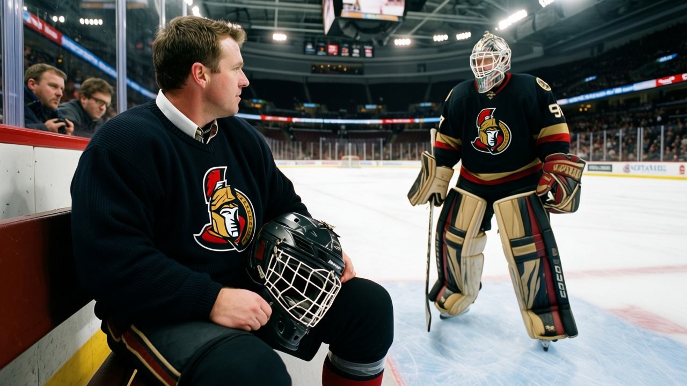

THE ROOM IS GONE: 84.5, L7, and $26.27 Million in Profit
Three Senators sit at the bottom of the Morale Scale. The losing streak hit 7. The building is still full.
 Mickey "The Mick" DonnellyColumnist, ex-goalie · The Penalty Box
Mickey "The Mick" DonnellyColumnist, ex-goalie · The Penalty BoxThe Ottawa Senators: lowest morale, 7-game skid, $26.27M profit, and still charging $80 a seat

Ottawa has the unhappiest dressing room in hockey. The Bureau's Morale Scale puts  Ottawa Senators at 84.5, dead last among 30 clubs. Columbus, the next-worst, sits at 86.6. The gap between those two rooms is about the same as the gap between Columbus and Phoenix. Ottawa isn't in the basement. It's in a hole underneath it.
Ottawa Senators at 84.5, dead last among 30 clubs. Columbus, the next-worst, sits at 86.6. The gap between those two rooms is about the same as the gap between Columbus and Phoenix. Ottawa isn't in the basement. It's in a hole underneath it.
Three Ottawa players are tied at 72, the lowest morale mark in the league. Vaclav Varada71, a 75-grade winger, plays 11.9 minutes a night.  Bryan Smolinski74, a 78-rated center earning $2.40M, logs 11.5.
Bryan Smolinski74, a 78-rated center earning $2.40M, logs 11.5.  Peter Schaefer72 is graded 76, plays 11.1 minutes, collects $0.60M. You bury a 78-rated center at 11.5 minutes and a 76-grade winger at 11.1 and then you wonder why nobody in that room runs through a wall on a Tuesday night.
Peter Schaefer72 is graded 76, plays 11.1 minutes, collects $0.60M. You bury a 78-rated center at 11.5 minutes and a 76-grade winger at 11.1 and then you wonder why nobody in that room runs through a wall on a Tuesday night.
Those three are where the rot shows. The club average of 84.5 means the whole floor is under.
The slide has no bottom
Ottawa Senators is 15-21-4 with 40 points, 4th in the Northeast. The losing streak sits at 7, the longest in the league by 4 games. Nobody else is past 3. The last 10 games: 7 straight losses after 2 wins. Ottawa scores 155 in 43 games and gives up 165. They score enough to think about winning. The goals against say they can't close.
Away from home the numbers get worse. 7-16 on the road. Only Montreal is worse at 5-17. Every other team in this league has a better road record. At home, Ottawa is 11-9, respectable. On the road, they disappear. Travel doesn't explain 7-16. That's the room.
The owners don't need you to be happy
Payroll: $42.80M, the 8th-smallest in the league. Revenue: $56.27M. Profit: $26.27M, 7th-best in hockey. Attendance: 15,091 a night at $80 a seat. That's more bodies than Phoenix draws, more than Columbus, more than Calgary. The building fills, the money lands, the product stays the same.
Reimer and his spreadsheet will say morale doesn't move the standings. Doug, show me the team that lost 7 straight, has three men at the bottom of the morale scale, pays the 8th-least in the league, and still cleared $26.27M. The front office has figured out something the players haven't been told: how to make contender-level revenue on a 15-win roster by charging $80 to people who remember the 1990s.
Varada, Smolinski, and Schaefer will lace up again. The building will fill. The dressing room won't be loud. And nobody in the front office will have to answer whether 15 wins in 43 games justifies another $80 seat.